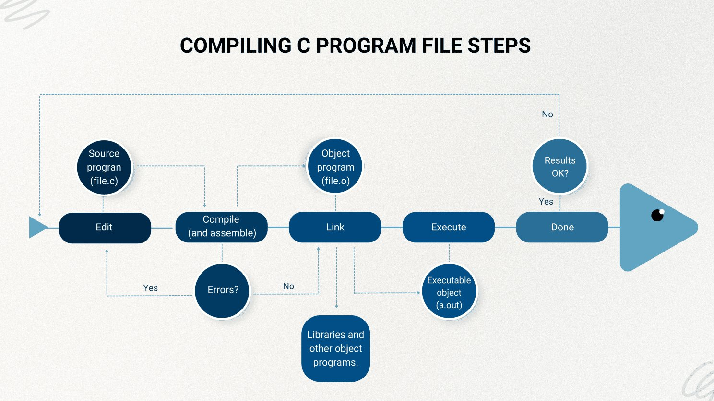

GET /posts/gcc-main-c200 OK
What happens when you type gcc main.c
Originally published on LinkedIn.
Before we talk about what happens when we type this command to compile a C program:
gcc main.clet's first talk about what compiling a program means.
Compiling programs
A computer doesn't understand any language except machine language (0s and 1s). So when we write a program in a higher-level language like C or C++, we need a special program that translates our statements into a form the computer can understand. That program is called a compiler.
A compiler is a software program that analyzes a program written in a particular language and translates it into a form that can run on your particular computer system.
The GCC compiler
GCC, the GNU Compiler Collection, is a program commonly used to compile C. It started as a compiler for C only, but it now supports many other languages, including C++, Objective-C, Ada, Go, Fortran and D.
It's also known as gcc in lowercase, which is the command you type. It translates a C file into an executable in machine language that the computer can run.
In this article we'll focus on compiling a C file with gcc.
Compiling a C program: behind the scenes
A C program goes through these steps during compilation:

The four stages inside gcc
When you type gcc main.c, gcc actually runs four stages, one after another. You can stop it after each stage to see what it produced:
| Stage | What it does | Stop here with | Output |
|---|---|---|---|
| 1. Preprocessor | Replaces each #include with that file's contents, expands #define macros and removes comments | gcc -E main.c | Expanded C code, printed to the screen |
| 2. Compiler | Translates the C code into assembly | gcc -S main.c | main.s |
| 3. Assembler | Translates the assembly into machine code | gcc -c main.c | main.o (an object file) |
| 4. Linker | Joins your object file with the libraries it uses, like the code behind printf | gcc main.c | a.out (the executable) |
Knowing the stages helps you read error messages. implicit declaration of function comes from the compiler: it hasn't seen a declaration of that function. undefined reference to comes from the linker: it knows the name, but can't find the code.
Trying it out
To see what happens when we type gcc main.c, let's open the terminal and create a file named hello.c with a simple program that prints Hello World!:
vi hello.c#include <stdio.h>
int main(void)
{
/* this prints "Hello World" */
printf("Hello World!");
return (0);
}Before compiling, there's only one file in the folder:
$ ls
hello.cNow let's compile it:
$ gcc hello.cThe result is stored in a new file, ready to run. On Unix-like systems, this file is called a.out by default. On Windows, the executable usually has the same name as the source file, with .c replaced by .exe.
$ ls
a.out hello.cYou can choose the name yourself with -o, for example gcc hello.c -o hello.
Now let's run a.out:
$ ./a.out
Hello World!%Finally, Hello World! is printed.
The%right after the text isn't part of the output. The program doesn't print a newline (\n) at the end, so zsh adds a%to show that the last line ended without one. Changing the line toprintf("Hello World!\n");makes it disappear.
Note for Mac users: on macOS, thegcccommand is usually Apple's Clang compiler under the same name. Rungcc --versionto check. The four stages and the flags above work the same way.
Sources
- Stephen G. Kochan, Programming in C, 3rd edition
- GeeksforGeeks: Compiling a C program, behind the scenes